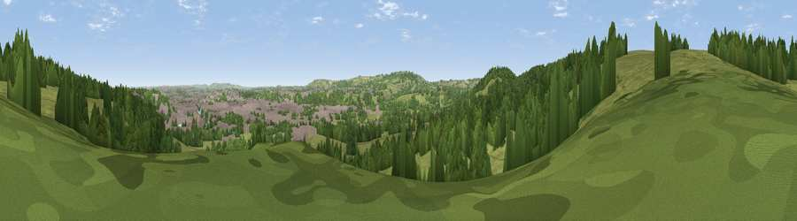

Viewpoint near Leigh Woods
#28798 in England · top 55% of its area beats it · near Leigh WoodsWhere it is
The exact computed spot (ST 55675 72075). Click the marker for map links.
The view, rendered

A 360° render of this exact spot computed from the terrain model, tree cover and land cover — summer colours, afternoon light, calibrated against photographs of famous viewpoints. Real trees, hedges and buildings will differ in detail.
The panorama
Grey silhouette: terrain skyline in each direction (720 bearings, Earth curvature and refraction included). Dashed green: skyline with trees (+15 m) and buildings (+8 m) as obstacles. Blue strip: how far the ground is visible on each bearing.
Where the view opens
Wedge length = distance to the farthest visible ground on that bearing (vegetation-aware). Rings at 10, 25 and 50 km.
What fills the view
52% grassland · 36% woodland · 11% built-up
Angular shares of the visible panorama (visual magnitude), not map area. Landscape diversity 0.43 (0–1 Shannon).
Key numbers
More beautiful places nearby
The staircase of upgrades: each row has a higher view potential than everything closer. Driving times are estimates from straight-line distance, calibrated against real road routing — check an actual route before setting out.
| Place | Direction | Drive | Score |
|---|---|---|---|
| Viewpoint near Leigh Woods | NNE · 1 km | ~3 min | 45.2 |
| Viewpoint near Failand | WSW · 5 km | ~10 min | 58.6 |
| Dundry Hill | S · 5 km | ~12 min | 72.4 |
| Viewpoint near Norton Malreward | SE · 7 km | ~14 min | 72.9 |
| Dial Hill | W · 15 km | ~27 min | 74.9 |
| Viewpoint near North Stoke | ESE · 15 km | ~27 min | 75.4 |
| Hanging Hill | E · 16 km | ~28 min | 76.4 |
| Beacon Batch | SSW · 16 km | ~29 min | 79.4 |
51.44592, -2.63919 · source: screening · position refined by local search. Computed location — check access rights before visiting.